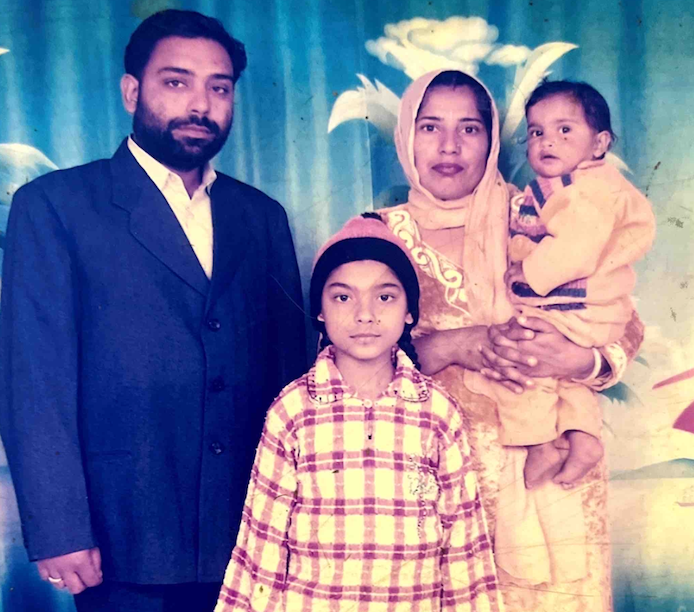
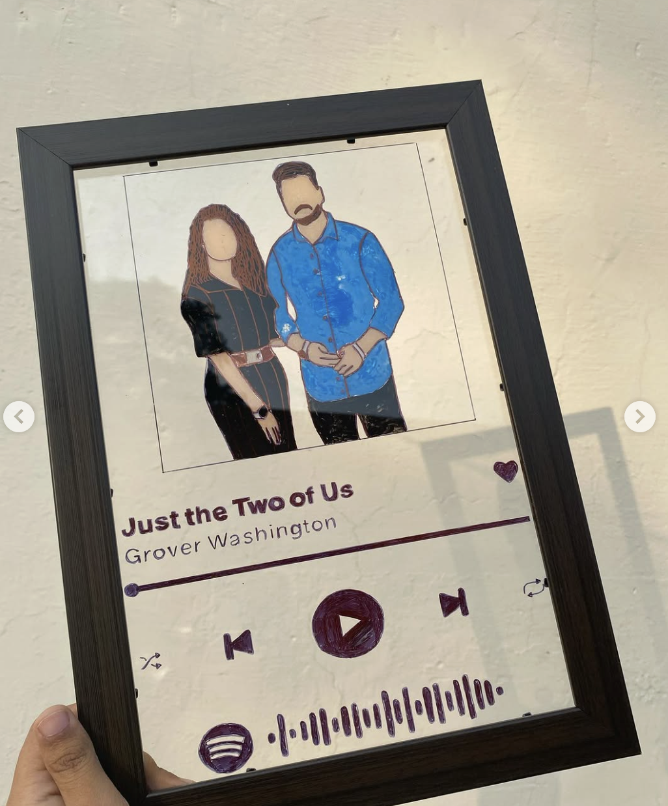

2005 – 2024
I was born on March 15, 2005, into a Punjabi household that was loving, loud, and honestly kind of messy in the way most families are. I'm the second child. My sister is nine years older, which basically makes her my second mom. She was in third grade when I was born, and she named me. If you ask me what my name means, I still couldn't tell you with confidence. Google says "one who is well-guided" or "someone who upholds moral values," but I doubt a nine-year-old was thinking that deeply. She probably just liked how it sounded, and lowkey, I respect that.
My mom wanted a son, so when she found out I was a girl, she cried. I learned this when I was 9, and it stuck with me more than I realized at the time. I think that's why I grew up trying to never disappoint her, to prove that daughters aren't burdens and that girls can carry families forward just as much as sons can. My dad, on the other hand, was really happy when I was born.
My family wasn't what you'd call "normal." My dad had been diagnosed with a nervous illness even before I was born, so my mom became the main provider, carrying two kids and a household that didn't always feel emotionally safe. Looking back, I think I grew up faster than I should have. I learned early that my "job" was to do well in school, because education felt like our only way out. I liked it, though. I liked studying and being first in class.
But money was always a concern, and even as a kid, I wanted to help my mom somehow. Since I couldn't legally work, I searched online for ways to make money, and that's how I started a YouTube channel around age 12. My first videos were bad. Bad camera, bad editing, bad everything. I barely got any views and eventually stopped.
I still liked making things, though. I used to make handmade gifts for my sister every year, scrapbooks, cards, small DIY projects I learned from YouTube. When her friends saw them, they started asking if I could make some for them too. That's how my first little business, Artistholic, started. I sold scrapbooks, explosion boxes, Spotify plaques, and paintings. I didn't have a lot of customers, but it was the first time I realized something I made could actually have value to other people.
That feeling kept showing up. A lot changed in 2019, when my sister got a job in Gurgaon and saw how sheltered my school environment was. She pushed me to move to a better high school in the city for 9th and 10th grade, and that decision changed me. For the first time, I wasn't the smartest person in the room. People spoke fluent English, and I didn't. I'd grown up around Punjabi and Hindi, and even though I could read and understand English, speaking it felt uncomfortable and unnatural. Academically I was fine, but socially it was hard. Over time, though, I learned how to talk to people, how to be more confident, and how to exist in spaces where I wasn't automatically comfortable.
That's also when I went back to YouTube, more seriously this time. I figured if I wanted to improve my English, I needed to actually speak it, and since I couldn't really do that at home, I did it in my videos. I taught myself how editing works, how algorithms work, what makes people want to watch something, all of it from YouTube itself. I treated it like a full-time job, and the channel started growing.
In 12th grade I had to slow down, because I was applying to universities abroad and prepping for board exams at the same time. I applied to 43 universities across different countries. My main filter was financial aid, since my family couldn't afford international tuition and I didn't want to take a loan. I didn't even know what I wanted to study. I just knew I wanted more exposure, more independence, and a different kind of life than the one I could access in the system I grew up in.
I got a lot of rejections. A few acceptances and scholarships too, but nothing that made studying abroad actually possible. I also realized I'd started way too late. People around the world had been preparing since 9th grade, and I was figuring it out in the summer of 12th. So I took a gap year and decided to try again. It was risky, but I felt like if I didn't take the chance, I'd always wonder what could've happened.
That gap year ended up changing the trajectory of my life. It was the first time I worked real jobs, made my own money, and saw how teams and companies actually function. It taught me what kind of work I enjoy and what I definitely don't. And more than anything, it made me more independent and more sure of my ability to figure things out on my own.
Engaged 8+ global clients through cold outreach and inbound leads. Produced short-form video content across multiple industries.
Produced video content for an on-demand creative talent marketplace, generating 200K+ Reel views. Launched the Freelance Mastery Series, showcasing undiscovered Indian artists to a 34K+ audience. Learned startup workflows, Slack, standups, and creative collaboration.
Managed and created content for social media channels at an Australian NDIS and disability service provider. Achieved 7,000%+ follower growth through SEO-driven strategy. Designed marketing assets and developed proficiency in Adobe Express.
Helped organize the first-ever CodeDay in Punjab — an offline coding event and hackathon for high schoolers. Drove 200+ student registrations by partnering with local schools and leveraging social media outreach to reach 10,000+ accounts.
Produced storytelling and educational content encouraging students to pursue international opportunities and personal growth. Built a community of 4,000+ across platforms, accumulated 3M+ total views, and published 100+ videos. Collaborated with brands including College Essay Guy, Unacademy, and Harnoor Singh.
Conducted 100+ intern interviews, maintained employee records, and addressed worker inquiries. First paid internship experience EVER.
Selected among top 16% of 300+ applicants. Graduated top 5, presented a capstone project, and was offered a full-time intern role at conclusion of program.
Organized tree-planting drives, cleanliness campaigns, and yoga sessions. Participated in awareness rallies promoting sustainability.
Built and ran a small business crafting personalized handmade gifts like scrapbooks, explosion boxes, and Spotify plaques. Spread 10+ smiles, earned $100+ in net profit. Developed skills in e-commerce, supplier relations, and customer service.


view on instagram ↗